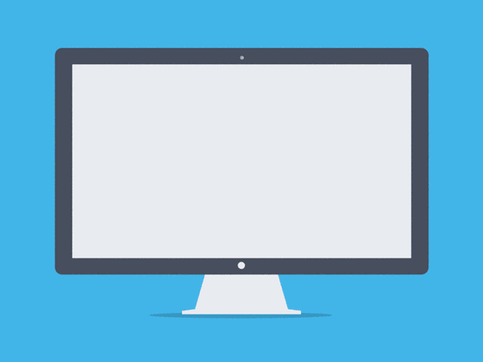

Una página web es un documento o cualquier tipo de información que se crea en formato HTML (sigla en inglés de HyperText Markup Language o lenguaje de marcas de hipertexto), que es adaptado a la World Wide web (WWW) y que se accede a su contenido a través de algunos de los navegadores existen.
Su finalidad es la de difundir información (estática o dinámica) de cualquier índole a través de la World Wide Web.
Una página web sirve como puntal para existir en Internet. Así de claro. La página web debe ser el centro de cualquier estrategia online. Sirve para darse a conocer entre todos aquellos que no conocen tu marca, empresa o PyME, o los productos o servicios que ofreces.
Los sitios web incluyen documentos HTML, fotografías, sonidos, vídeos, animaciones Flash y otro tipo de contenidos que pueden compartirse en línea. La URL raíz del sitio web se conoce como portada o homepage. ... Por ejemplo: El sitio web del diario argentino Clarín se encuentra en http://www.clarin.com/.
La importancia de elegir bien los tipos de sitios web
Sitios estáticos y dinámicos.
Según la forma de construcción y actualización del contenido, podemos encontrar páginas estáticas o dinámicas. ...
Sitios institucionales o corporativos.
Blogs.
Tiendas online o e-commerce.
Buscadores.
Comparadores.
